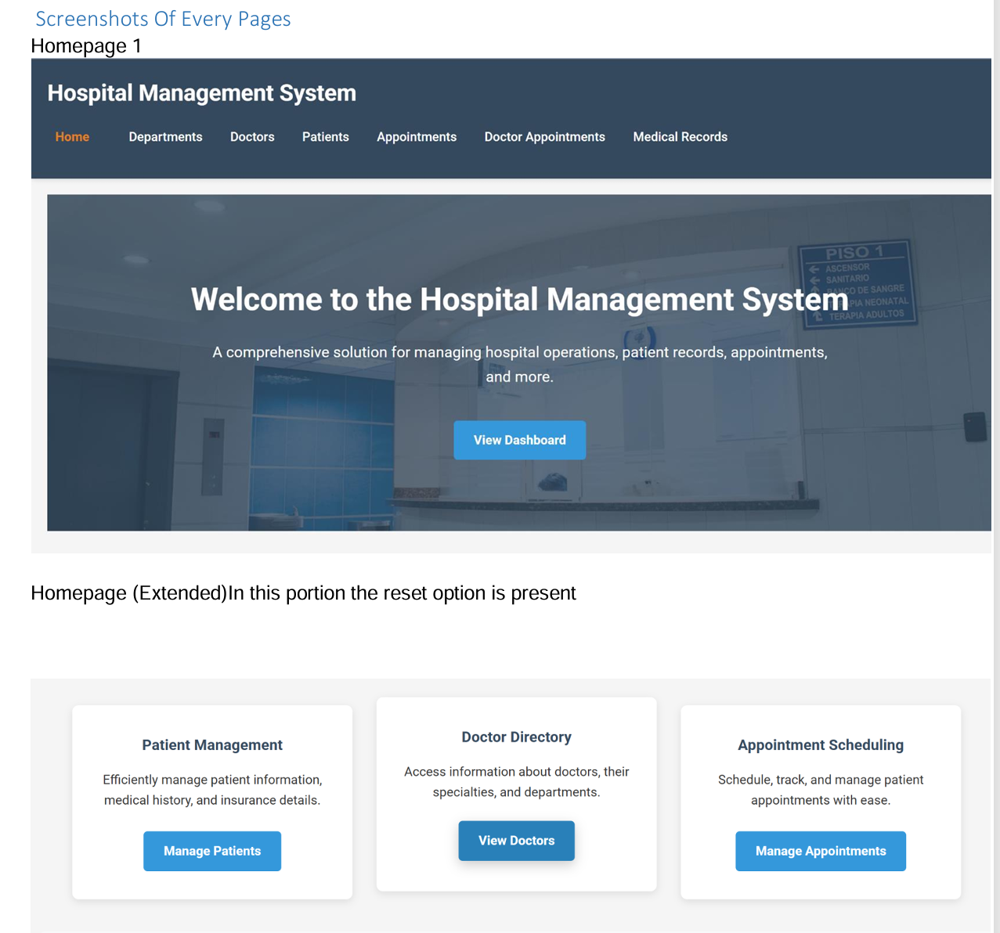
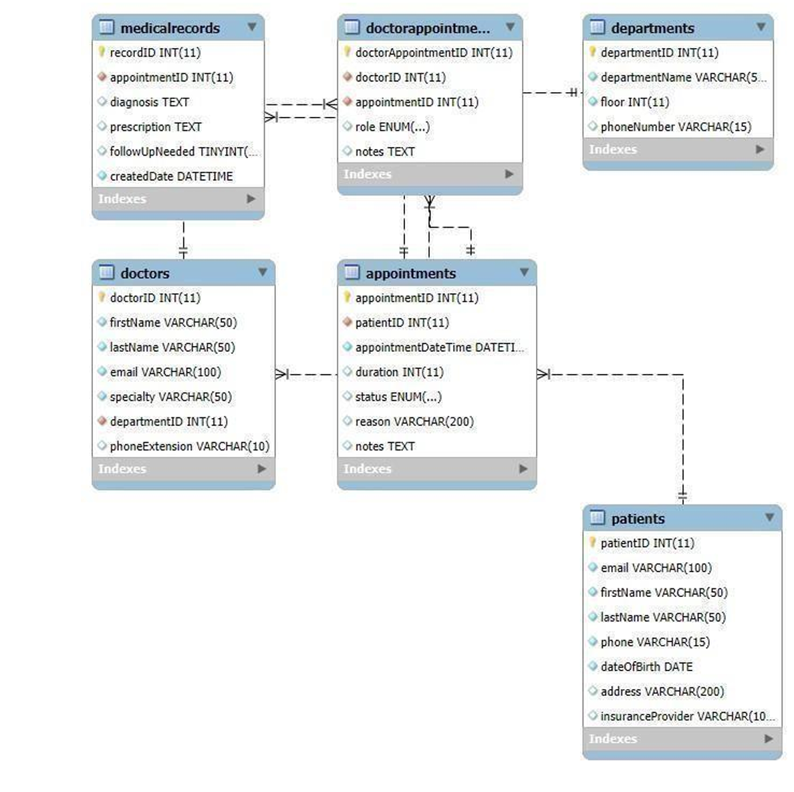
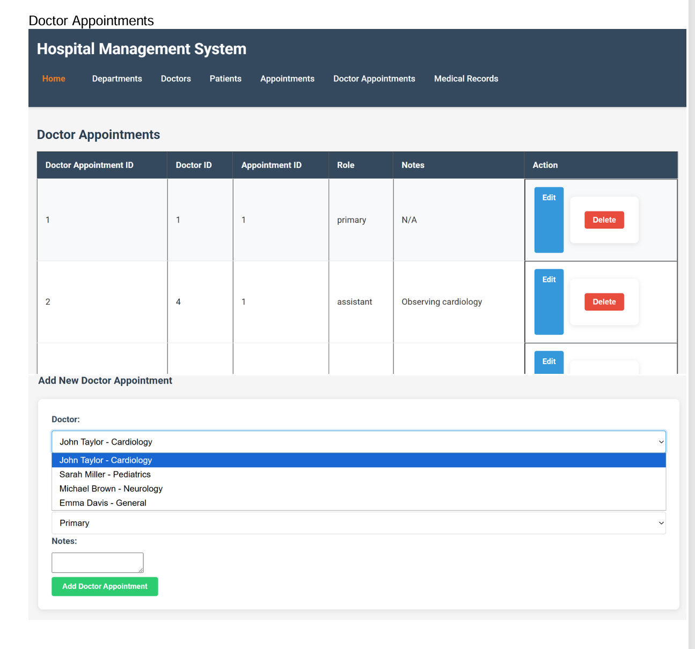
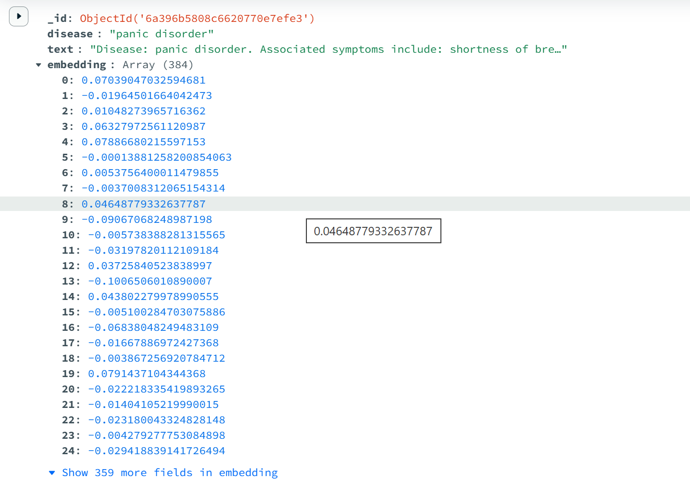
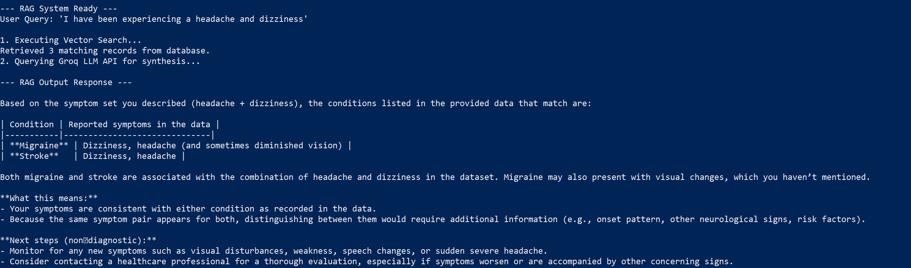
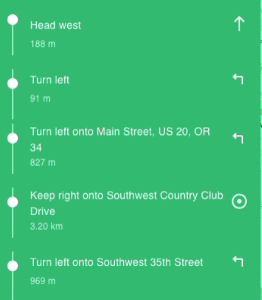
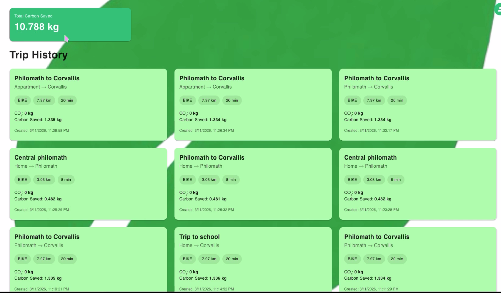

Tashfia Tabassum
Professional Summary
AI-focused Computer Science student at Oregon State University building production-ready ML systems across NLP, computer vision, and classification. Experienced designing and evaluating full model pipelines from data preprocessing and training to deployment via REST APIs. Consistent Dean's List honoree with hands-on research experience and a track record of delivering technical work in collaborative, deadline-driven environments.
Technical Skills
- Programming Languages: Python, Java, C/C++, JavaScript, SQL
- Frameworks & Tools: TensorFlow, PyTorch, Scikit-learn, FastAPI, Django, React, MongoDB Atlas Vector Search, Node.js, Express.js, MySQL
- Technical Areas: Machine Learning, NLP, Computer Vision, Generative AI (RAG), Data Analysis, RESTful APIs, Full-Stack Web Development
- Version Control: Git, GitHub
Education
Oregon State University
- Honors & Standing: Dean's List, 8 Consecutive Terms | GPA: 3.82
Featured Projects
Hospital Management Web Application
Node.js | Express | MySQL | Handlebars
This full-stack web application was engineered to streamline hospital administration by digitizing patient records, appointment scheduling, and departmental workflows. It provides a robust, centralized database solution to ensure data integrity and seamless operational efficiency for healthcare staff.
- Developed a full-stack hospital management system supporting complete CRUD operations across 6 entities: Departments, Doctors, Patients, Appointments, DoctorAppointments, and Medical Records.
- Implemented all write operations through MySQL stored procedures (AddDepartment, UpdateDoctor, DeletePatient, ResetHospitalDB) to enforce data integrity at the database layer.
- Designed a RESTful route architecture with 30+ endpoints (GET/POST/PUT/DELETE) and server-side rendered UI using Express-Handlebars templates.
- Configured a MySQL connection pool (mysql2) with a 10-connection limit and integrated method-override middleware to support full HTTP verb semantics from HTML forms.



Medical Symptom RAG System
Python | PyTorch | MongoDB Atlas | Groq API | Llama 3 | SentenceTransformers
Addressing the need for accurate medical information retrieval, this system leverages Large Language Models and vector search to ground AI responses in verified medical data, significantly reducing hallucination in critical healthcare contexts.
- Architected and deployed an end-to-end Retrieval-Augmented Generation (RAG) pipeline to analyze user-reported symptoms and summarize relevant medical conditions using LLMs.
- Engineered a data ingestion pipeline using Pandas and PyTorch, transforming a 246,000-row binary occurrence matrix into semantic text representations.
- Implemented hardware-accelerated batch processing with Hugging Face Sentence Transformers (all-MiniLM-L6-v2) to generate dense vector embeddings at scale.
- Configured MongoDB Atlas Vector Search indexing for rapid high-dimensional similarity queries; integrated Groq API with Llama 3 and strict system prompting to prevent hallucination.


Sentiment Analysis with Transformers
Python | PyTorch | XLM-RoBERTa | RoBERTa | DistilBERT | ALBERT
This research-oriented project focused on evaluating the performance trade-offs among various state-of-the-art BERT architectures, providing actionable insights into model selection for large-scale natural language processing tasks.
- Fine-tuned and benchmarked four BERT-variant models on a 1.6M-sample dataset with learning rate scheduling, early stopping, and class-weight balancing.
- Built a unified evaluation framework tracking accuracy, precision, recall, and F1 with flexible per-model CLI inference and automatic tokenization.
AI Health Symptom Checker
Python | XGBoost | MedSpaCy | SMOTE | SHAP | TF-IDF
Designed as a preliminary diagnostic tool, this application combines natural language processing with gradient boosting to interpret free-text symptoms, prioritizing patient urgency with transparent and explainable AI techniques.
- Built a clinical NLP system using MedSpaCy to extract symptoms from free text, classify conditions with an XGBoost + TF-IDF pipeline, and flag urgent symptoms via a rule-based severity engine.
- Applied SMOTE for class imbalance, stratified k-fold cross-validation for robustness, and SHAP values for explainable per-condition predictions.
Person Identification System
Python | TensorFlow | FaceNet | MTCNN | FastAPI | HTML | JS
A high-performance biometric pipeline designed for real-time facial recognition. By combining efficient detection algorithms with deep metric learning, the system offers reliable multi-person identification suitable for security and access control applications.
- Built a real-time face recognition pipeline using MTCNN detection and FaceNet embeddings with cosine similarity, achieving 0.5–1.0s per-image inference.
- Served the model via a FastAPI REST endpoint with an HTML/JS web interface supporting multi-person identification with confidence scoring.
Feedback Analyzer
Python | Scikit-learn | NLP | Supervised Classification
An automated machine learning pipeline built to process and classify unstructured user feedback, enabling data-driven decision-making through accurate sentiment and topic categorization.
- Built an end-to-end ML pipeline for feedback classification using TF-IDF feature extraction, cross-validated classifiers, and hyperparameter tuning to maximize F1 score.
EcoRoute
Python | React | Route Optimization | Geospatial APIs
EcoRoute tackles urban emissions by providing users with environmentally conscious navigation options. The application integrates real-time geospatial data to calculate and recommend the most carbon-efficient travel paths.
- Developed a full-stack app recommending low-carbon commute routes via graph traversal and real-time environmental data, with a React frontend and Python backend.



Work Experience
Undergraduate Learning Assistant
- Supported 3 undergraduate CS courses per term, holding weekly office hours for a combined cohort of 120+ students and improving average section performance by an estimated 15%.
- Collaborated with 4 faculty members on quiz design, assignment rubrics, and instructional planning, reducing grading turnaround time by approximately 20%.
- Provided individualized guidance in data structures, algorithms, and AI fundamentals, helping students complete complex programming assignments with higher first-submission pass rates.
- Facilitated active-learning activities and peer-mentoring sessions that contributed to measurable increases in weekly student engagement and discussion participation.
Undergraduate Lab Assistant
- Participated in 50+ weekly lab meetings and research discussions, contributing literature reviews and technical summaries to support 2 ongoing faculty-led research projects.
- Co-presented 3 progress reports to a team of 10 graduate students and faculty, communicating experimental findings and proposing data-driven design improvements.
- Performed quantitative progress assessments in collaboration with graduate researchers, reducing experimental iteration cycles by approximately 25%.
- Contributed to a multidisciplinary research environment of 15+ team members, strengthening scientific communication and cross-functional collaboration skills.
Administrative Program Assistant
- Coordinated workflows across 4 academic departments, reducing document-processing delays by approximately 30%.
- Managed 200+ academic and administrative records, supporting 500 student and faculty requests per term.
- Assisted 60+ students and faculty per month with academic processes, advising requests, and administrative inquiries.
Undergraduate Research Assistant
- Ran and post-processed 30 simulation scenarios for structural vulnerability assessment, generating performance curves used in research publications and reports.
- Applied computational modeling and statistics to quantify infrastructure fragility across 10 critical systems, achieving 90%+ data fidelity across test cases.
- Summarized findings in 2 internal technical reports and supported academic presentations delivered to faculty panels of 12 researchers.
Professional References
Academic and professional references from Oregon State University faculty and research advisors are available upon request.
Please contact me via email at tabassut@oregonstate.edu for detailed contact information of my references.